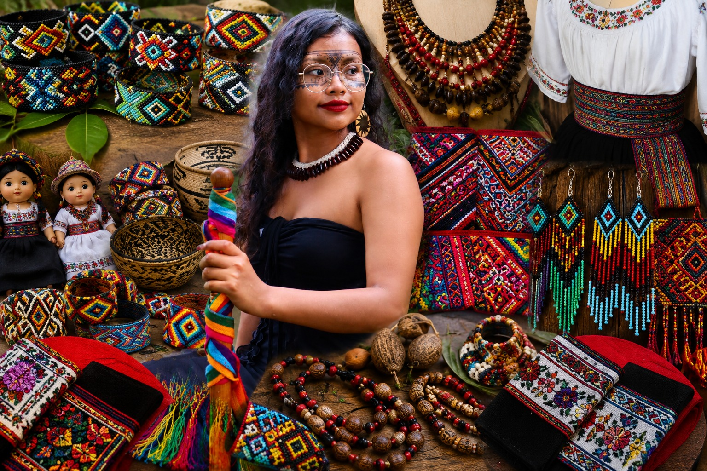

Artesanías Kichwa Sumak Kawsay es un emprendimiento orientado a la promoción de la identidad cultural de los pueblos Kichwa del Ecuador. Nuestro trabajo se enfoca en la elaboración artesanal de manillas, collares, accesorios y vestimenta tradicional que reflejan la historia, costumbres y valores ancestrales de nuestras comunidades. Cada producto es elaborado cuidadosamente utilizando técnicas transmitidas de generación en generación, respetando los conocimientos y saberes de nuestros antepasados. Nuestro objetivo es fortalecer la economía comunitaria, impulsar el comercio justo y dar a conocer la riqueza cultural de la nacionalidad Kichwa tanto a nivel nacional como internacional. A través de nuestras artesanías buscamos conservar las tradiciones indígenas, fomentar el orgullo cultural y ofrecer productos auténticos que representen la diversidad y belleza del patrimonio ecuatoriano.
